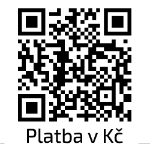
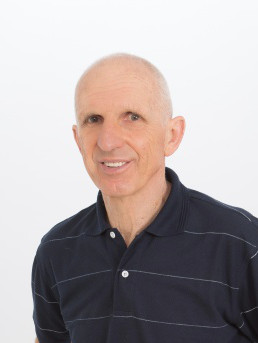

O nás
Rodinná strojírenská tradice od roku 1898, výroba přívěsů VAPP od roku 1991. Dnes vlastní výroba, prodej přívěsů dalších značek, autorizovaný servis AL‑KO, BPW a KNOTT a distribuce náhradních dílů.
Provozovna a údaje o firmě
Areál VAPP s.r.o.
Popovičky 38, 251 01 Popovičky
Praha – východ
Po–Pá 8:30–16:30
Naplánovat trasu- IČ
- 24140309
- DIČ
- CZ24140309
Firma je zapsána v obchodním rejstříku vedeném Městským soudem v Praze, oddíl C, vložka 182308.
- Tuzemské platby (Kč)
- 888 222 000 / 2010
- IBAN (EUR)
- CZ17 2010 0000 0029 0015 4768
- SWIFT
- FIOBCZPPXXX
Fio banka, a.s.

QR platba na tuzemský účet — naskenujte v bankovní aplikaci.Milníky
{{ m.text }}
Historie

Firma VAPP byla založena panem Zdeňkem Štantejským v roce 1991. Nešlo o náhodné rozhodnutí — strojírenská výroba má v rodině Štantejských dlouholetou tradici. Už v roce 1898 začal František Štantejský v Praze ve Vladislavově ulici vyrábět jízdní kola vlastní značky, od roku 1934 pak v licenci i kola Hellyett včetně tehdy špičkových závodních speciálů z dovážených trubek Reynolds. Výrobu kol značky Štantejský ukončila éra socialismu; navázat na rodinnou tradici ryze české výrobní firmy se podařilo až v roce 1991 zahájením výroby vlastních nákladních přívěsů.
Po svém vzniku se firma specializovala na dvounápravové brzděné přívěsy. Jako jedny z prvních na českém trhu byly přívěsy VAPP vyráběny s tehdy málo rozšířenou, velmi odolnou povrchovou úpravou žárovým zinkováním. Díky kvalitnímu dílenskému zpracování, jízdním vlastnostem a vysoké odolnosti se staly vyhledávanými i mezi profesionálními dopravci — zvlášť přepravníky automobilů.
S rozšiřováním výroby o další typy se nezměnila dlouhodobá strategie: nabízet vysoce kvalitní produkty v užším portfoliu tak, aby byla zajištěna dlouholetá plná podpora všech produktů, bezproblémová dostupnost náhradních dílů a snadná opravitelnost. Díky tomu je dnes možné potkat na silnicích plně funkční přívěsy VAPP i z počátku devadesátých let.
V současné době nabízí VAPP jak přívěsy vlastní výroby, tak přívěsy dalších značek, kterými vhodně doplňuje nabídku vlastní produkce. Samozřejmostí jsou servisní služby včetně pravidelné údržby a přípravy přívěsů na STK — se zaměřením na nákladní přívěsy, podvozkové části karavanů a speciálních přívěsů, kompresorů a elektrocentrál do 3 500 kg. VAPP je autorizovaným servisním střediskem přívěsové techniky AL‑KO, BPW a KNOTT. Nedílnou součástí činnosti je prodej a distribuce náhradních dílů, doplňků a příslušenství.
Od svého vzniku firma udržuje vysoký standard poskytovaných služeb a výrobků a tento trend má v plánu zachovávat i nadále.